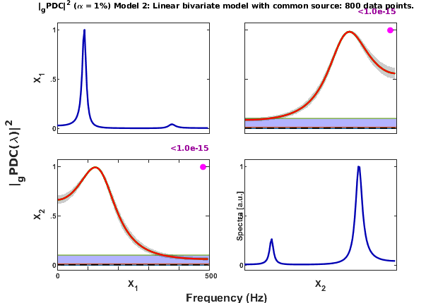
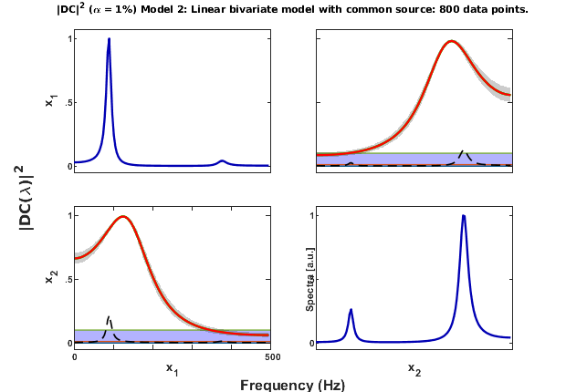
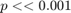

GOUREVITCH ET AL. (2006) - Linear 2-VAR with feedback and common sourcew
DESCRIPTION:
Example Model 2: Linear bivariate model with bidirectional influence with common source
x1<==>x2 (feedback) x1==x2 (instantaneous Granger causality)
x1<==S==>x2, which gives x1==x2 (iGC) from hidden source
Example Model 2 was borrowed from:
Gourevitch, Bouquin-Jeannes & Faucon. Linear and nonlinear casuality between signals: methods, examples and neurophysiological applications. Biol Cybern 95:349--369, 2006.
http://dx.doi.org/10.1007/s00422-006-0098-0
Contents
- See also: mvar, mvarresidue, asymp_pdc, asymp_dtf, gct_alg,
- Interaction diagram
- Equation
- Data sample generation
- MVAR model estimation
- Granger causality test (GCT) and instantaneous GCT
- Original PDC estimation
- Generalized PDC estimation
- Result from the original article, Gourevitch (2006)
- gPDC p-values matrix layout plots
- gDTF = DC estimation
- DTF Matrix Layout Plotting option with fixed y-axis scale on [0 1] range
- Concluding remarks
See also: mvar, mvarresidue, asymp_pdc, asymp_dtf, gct_alg,
igct_alg, xplot, xplot_pvalues
% (C) Koichi Sameshima & Luiz A. Baccalá, 2022. % See file license.txt in installation directory for licensing terms.
clear; clc
Interaction diagram
Figure 4 from Gourevitch et al. Biol. Cybern. 95:349-369, 2006.
Equation
Equations (38) and (39), Gourevitch et al. (2006)
Data sample generation
nDiscard = 1000; % number of points discarded at beginning of simulation nPoints = 800; % number of analyzed samples points u = fgourevitch2006_model2( nPoints, nDiscard ); chLabels = []; % or = {'x_1';'x_2';'x_3';'x_4';'x_5'}; fs = 1000; % 1 kHz as used by Gourevitch et al. (2006)
====================================================================================================
Gourevitch et al. Biol Cybern 95:349-69, 2006.
Model 2: Linear Bivariate model with Bidirectional Influence
at different frequencies in each direction, with Common Source
x1-->x2 x2-->x1 x1--x2 (With instantaneous causality)
====================================================================================================
Data pre-processing: detrending and normalization options
flgDetrend = 1; % Detrending the data set flgStandardize = 0; % No standardization [nChannels,nSegLength] =size(u); if nChannels > nSegLength u = u.'; [nChannels,nSegLength]=size(u); end if flgDetrend for i=1:nChannels, u(i,:)=detrend(u(i,:)); end disp('Time series were detrended.'); end if flgStandardize for i=1:nChannels, u(i,:)=u(i,:)/std(u(i,:)); end disp('Time series were scale-standardized.'); end
Time series were detrended.
MVAR model estimation
maxIP = 30; % maximum model order to consider. alg = 1; % 1: Nutall-Strand MVAR estimation algorithm; % % 2: minimum least squares methods; % % 3: Vieira Morf algorithm; % % 4: QR ARfit algorith. criterion = 1; % Criterion for order choice: % % 1: AIC, Akaike Information Criteria; % % 2: Hanna-Quinn; % % 3: Schwarz; % % 4: FPE; % % 5: fixed order given by maxIP value. disp('Running MVAR estimation routine...') [IP,pf,A,pb,B,ef,eb,vaic,Vaicv] = mvar(u,maxIP,alg,criterion); pause(3); disp(['Number of channels = ' int2str(nChannels) ' with ' ... int2str(nSegLength) ' data points; MAR model order = ' int2str(IP) '.']);
Running MVAR estimation routine... maxOrder limited to 30 IP=1 vaic=11734.758870 IP=2 vaic=9228.957025 IP=3 vaic=9234.946261 Number of channels = 2 with 800 data points; MAR model order = 2.
Testing for adequacy of MAR model fitting through Portmanteau test
h = 20; % testing lag MVARadequacy_signif = 0.05; % VAR model estimation adequacy significance % level aValueMVAR = 1 - MVARadequacy_signif; % Confidence value for the testing flgPrintResults = 1; [Pass,Portmanteau,st,ths] = mvarresidue(ef,nSegLength,IP,aValueMVAR,h,... flgPrintResults);
====================================================================================================
MVAR RESIDURES TEST FOR WHITENESS
----------------------------------------------------------------------------------------------------
Good MAR model fitting! Residues white noise hypothesis NOT rejected.
Pass = 0.0625
st = 84.3389
Granger causality test (GCT) and instantaneous GCT
alpha = 0.01; gct_signif = alpha; % Granger causality test significance level igct_signif = alpha; % Instantaneous GCT significance level flgPrintResults = 1; % Flag for printing gct/igct results on command window. [Tr_gct, pValue_gct] = gct_alg(u,A,pf, gct_signif,flgPrintResults); [Tr_igct, pValue_igct] = igct_alg(u,A,pf,igct_signif,flgPrintResults);
====================================================================================================
GRANGER CAUSALITY TEST
----------------------------------------------------------------------------------------------------
Connectivity matrix:
NaN 1
1 NaN
Granger causality test p-values:
NaN 0
0 NaN
====================================================================================================
INSTANTANEOUS GRANGER CAUSALITY TEST
----------------------------------------------------------------------------------------------------
Instantaneous connectivity matrix:
NaN 1
1 NaN
Instantaneous Granger Causality test p-values:
NaN 0
0 NaN
>>>> There is a pair of channels with significant Instantaneous
Granger Causality.
====================================================================================================
Original PDC estimation
PDC analysis results are saved in c structure. See asymp_pdc.m or issue >> help asymp_pdc command for more detail.
nFreqs = 128; metric = 'euc'; % euc = original PDC or DTF; % diag = generalized PDC (gPDC) or DC; % info = information PDC (iPDC) or iDTF. c = asymp_pdc(u,A,pf,nFreqs,metric,alpha); % Estimate PDC and statistics c.Tragct = Tr_gct; c.pvaluesgct = pValue_gct;
PDC Matrix Layout Plotting
flgPrinting = [1 1 1 2 2 0 1]; % overriding default setting flgColor = 1; w_max=fs/2; chLabels={'x_1';'x_2'}; %Optional channel labels; strID = 'Gourevitch et al.(Biol Cybern, 2006)'; strTitle = ['Model 2: Linear bivariate model with common source: ' ... int2str(nPoints) ' data points.']; [h1,~,~] = xplot(strID,c,flgPrinting,fs,w_max,chLabels,flgColor); xplot_title(alpha,metric,'pdc',strTitle); % Main title
Generalized PDC estimation
gPDC analysis results are saved in d structure. See asymp_pdc.m.
metric = 'diag'; % euc = original PDC or DTF; % diag = generalized PDC (gPDC) or DC; % info = information PDC (iPDC) or iDTF. d = asymp_pdc(u,A,pf,nFreqs,metric,alpha); % Estimate PDC and statistics d.Tragct = Tr_gct; d.pvaluesgct = pValue_gct;
PDC Matrix Layout Plotting
flgPrinting = [1 1 1 2 3 0 1]; % overriding default setting flgColor = 1; w_max=fs/2; chLabels={'X_1';'X_2'}; %Optional channel labels; strID = 'Gourevitch et al.(Biol Cybern, 2006)'; [h2,~,~] = xplot(strID,d,flgPrinting,fs,w_max,chLabels,flgColor); strTitle = ['Model 2: Linear bivariate model with common source: ' ... int2str(nPoints) ' data points.']; xplot_title(alpha,metric,'pdc',strTitle); % Main title
Result from the original article, Gourevitch (2006)
Figure - from Gourevitch et al. (2006) presented results of PDC and DC
gPDC p-values matrix layout plots
flgPrinting = [1 1 1 2 3 0 0]; flgScale = 2; [h3,~,~] = xplot_pvalues([],d,flgPrinting,fs,w_max,chLabels,flgColor,flgScale); xplot_title(alpha,metric,['p-value gPDC'], ... 'Gourevitch et al.(Biol Cybern, 2006)');

gPDC's p-values in the frequency domain, which, in this case, are < 1.0e-15.
gDTF = DC estimation
DC analysis results will be saved in e structure. See asymp_dtf.m or issue >> help asymp_dtf command for more detail.
metric = 'diag'; e = asymp_dtf(u,A,pf,nFreqs,metric,alpha); % Estimate DTF and asymptotic statistics
DTF Matrix Layout Plotting option with fixed y-axis scale on [0 1] range
flgPrinting = [1 1 1 2 2 0 1]; % Plot auto-DTF on main-diagonal flgColor = 1; w_max=fs/2; flgMax = 'TCI'; flgScale = 1; flgSignifColor = 1; w_max=fs/2; chLabels={'x_1';'x_2'}; %Optional channel labels; strID = 'Gourevitch et al.(Biol Cybern, 2006)'; strTitle = ['Model 2: Linear bivariate model with common source: ' ... int2str(nPoints) ' data points.']; [h4,~,~] = xplot(strID,e,flgPrinting,fs,w_max,chLabels,flgColor); xplot_title(alpha,metric,'dtf',strTitle);
Note significant Instantaneous Granger causality in between the pair of processes. The common influence source in the model is 0.5*wi(3,t) Verify that the p-value (pValue) is or should be very small, i.e. .
Concluding remarks
- Check the output obtained in this simulation with the one presented in Gourevitch et al.'s article
- Try different sample size to see its influence on estimation and threshold level. Try for instance, in the [80 to 2000] range to see how the threshold value in PDC and DC varies.